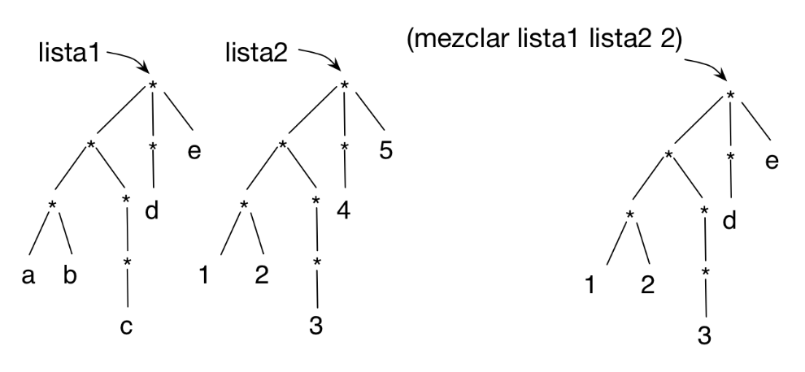

Práctica 7: Listas estructuradas¶
Antes de la clase de prácticas¶
-
Los siguientes ejercicios están basados en los conceptos de teoría vistos la semana pasada. Antes de la clase de prácticas debes repasar todos los conceptos y probar en el DrRacket todos los ejemplos de los siguientes apartados del tema 4 Estructuras de datos recursivas
- 1 Listas estructuradas
Ejercicios¶
Descarga el fichero
lpp.rkt,
pulsando el botón derecho del ratón y seleccionando la opción Guardar
como lpp.rkt. Guárdalo en la misma carpeta en la que tengas el
fichero practica7.rkt.
Puedes encontrar también el fichero lpp.rkt en el sitio Moodle
de la asignatura.
El fichero contiene la definición de la función (hoja? dato) y la
función (pinta-lista lista) que nos permite dibujar gráficamente una lista estructurada.
Por ejemplo, si definimos una lista estructurada como
1 | (define lista '(a (b (c d) e) (f g))) |
La llamada a pinta-lista dibujará lo siguiente:
Ejercicio 1¶
a) Escribe la lista estructurada correspondiente a la siguiente
representación gráfica por niveles. Para comprobar si la has definido
correctamente puedes intentar obtener algunos de los elementos de la
lista, como mostramos en el check-equal? que hay a continuación.
1 2 3 4 5 6 7 8 | *
/ | \
| | \
* d *
/ \ / / | \
a b c * * h
| / \
e f g
|
1 2 | (define lista-a '(________)) (check-equal? (fourth (third lista-a)) 'h) |
b) Dibuja la representación en niveles de las siguientes listas
estructurada. Comprueba después con la función (pinta-lista lista)
que las has dibujado correctamente.
1 2 | (define lista-b1 '((2 (3)) (4 2) ((2) 3))) (define lista-b2 '((b) (c (a)) d (a))) |
c) Dada la definición de cuadrado-estruct vista en teoría:
1 2 3 4 5 6 | (define (cuadrado-estruct lista) (cond ((null? lista) '()) ((hoja? lista) (* lista lista )) (else (cons ①➜(cuadrado-estruct (first lista)) ②➜(cuadrado-estruct (rest lista)))))) |
- Indica qué devuelve la expresión
(cuadrado-estruct lista-b1). La listalista-b1es la definida en el apartado anterior. - En la evaluación de la expresión anterior, indica cuáles son los
argumentos que se pasan por parámetro en las llamadas recursivas a
cuadrado-estructmarcadas con1y2. - En la evaluación de la expresión anterior, indican qué devuelven
las llamadas recursivas marcadas con
1y2.
d) Para entender el funcionamiento de las funciones de orden superior
que trabajan sobre listas estructuradas es muy importante entender qué
devuelve la expresión map que se aplica a la lista.
La siguiente función utiliza la función (nivel-hoja-fos dato lista)
vista en teoría. Indica qué devuelve la siguiente expresión. La lista
lista-b2 es la definida en el apartado anterior. Utiliza el dibujo
que has hecho en el ejercicio anterior para entender el funcionamiento
de la expresión.
1 2 | (map (lambda (elem) (nivel-hoja-fos 'a elem)) lista-b2) |
Ejercicio 2¶
a) Implementa la función recursiva (concatena lista) que recibe una
lista estructurada con símbolos y devuelve la cadena resultante de
concatenar todos los símbolos de la lista estructurada. Implementa dos versiones
de la función, una con recursión pura y otra con funciones de orden
superior.
Ejemplos:
1 2 | (concatena '(a b (c) d)) ; ⇒ "abcd" (concatena '(a (((b)) (c (d (e f (g))) h)) i)) ; ⇒ "abcdefghi" |
b) Implementa la función recursiva (todos-positivos? lista) que
recibe una lista estructurada con números y comprueba si todos sus
elementos son positivos. Implementa dos versiones de la función, una con
recursión pura y otra con funciones de orden superior.
Ejemplos:
1 2 | (todos-positivos? '(1 (2 (3 (-3))) 4)) ; ⇒ #f (todos-positivos-fos? '(1 (2 (3 (3))) 4)) ; ⇒ #t |
Ejercicio 3¶
Implementa la función (cumplen-predicado pred lista) que devuelva
una lista con todos los elementos de lista estructurada que cumplen un
predicado. Implementa dos versiones, una recursiva pura y otra
usando funciones de orden superior.
Ejemplo:
1 2 | (cumplen-predicado even? '(1 (2 (3 (4))) (5 6))) ; ⇒ (2 4 6) (cumplen-predicado pair? '(((1 . 2) 3 (4 . 3) 5) 6)) ; ⇒ ((1 . 2) (4 . 3)) |
Utilizando la función anterior implementa las siguientes funciones:
- Función
(busca-mayores n lista-num)que recibe una lista estructurada con números y un númerony devuelve una lista plana con los números de la lista original mayores quen.
1 | (busca-mayores 10 '(-1 (20 (10 12) (30 (25 (15)))))) ; ⇒ (20 12 30 25 15) |
- Función
(empieza-por char lista-pal)que recibe una lista estructurada con símbolos y un carácterchary devuelve una lista plana con los símbolos de la lista original que comienzan por el carácterchar.
1 2 | (empieza-por #\m '((hace (mucho tiempo)) (en) (una galaxia ((muy muy) lejana)))) ; ⇒ (mucho muy muy) |
Ejercicio 4¶
a) Implementa la función (sustituye-elem elem-old elem-new lista)
que recibe como argumentos una lista estructurada y dos elementos, y
devuelve otra lista con la misma estructura, pero en la que se ha
sustituido las ocurrencias de elem-old por elem-new. Puedes
hacerla de forma recursiva o con funciones de orden superior.
Ejemplo:
1 2 | (sustituye-elem 'c 'h '(a b (c d (e c)) c (f (c) g))) ; ⇒ (a b (h d (e h)) h (f (h) g)) |
b.1) Implementa la función recursiva (intersecta lista-1 lista-2)
que recibe como parámetros dos listas estructuradas y devuelve la
lista estructurada resultante de recorrer ambas listas y colocar una
pareja formada por la hoja de la primera y de la segunda en aquellas
posiciones en las que el recorrido de ambas listas terminen al mismo
tiempo en una hoja.
Por ejemplo, si definimos las dos listas de la siguiente forma:
1 2 3 4 5 6 7 8 9 10 11 12 13 | (define lista-1 '(a (b c) (d))) ; * ; / | \ ; a * * ; / \ \ ; b c d (define lista-2 '((e) (f) (g))) ; * ; / | \ ; * * * ; / / \ ;e f g |
La intersección de ambas listas sería:
1 2 3 4 5 6 7 | (intersecta lista-1 lista-2) ; ⇒ (((b . f)) ((d . g))) ; * ; | \ ; * * ; / \ ; (b.f) (d.g) |
La función recorrerá al mismo tiempo la primera y la segunda lista. En
la primera lista, en su primer elemento, llegará a la hoja a,
mientras que en la segunda lista llegará a una sublista (la que
contiene e). Ahí no habrá intersección. Después recorrerá el segundo
elemento de la primera y la segunda lista y llegará a las hojas b y
f al mismo tiempo, por lo que construirá la pareja (b
. f). Descartará la sublista de la segunda lista formada por la c,
por no existir correspondencia en la primera lista. Y, por último,
comprobará que recorriendo el último elemento de ambas listas se
llegará al mismo tiempo a las hojas d y g, formando la pareja (d
. g).
Debes implementar sólo la versión recursiva.
Otros ejemplos:
1 2 | (intersecta '(a b) '(c d)) ; ⇒ '((a . c) (b . d)) (intersecta '(a (b) (c)) '(d e (f))) ; ⇒ '((a . d) ((c . f))) |
b.2) Generaliza la función anterior, haciendo que reciba otra función
con la operación a realizar con las hojas: (intersecta-gen f lista-1
lista-2). Escribe tres ejemplos de uso de la función genérica con
distintas funciones a aplicar a las hojas y explica qué devuelve cada caso.
Ejercicio 5¶
Dos funciones sobre niveles:
a) Define la función recursiva (mezclar lista1 lista2 n) que reciba
dos listas estructuradas con la misma estructura y un número que
indica un nivel. Devuelve una nueva lista estructurada con la misma
estructura que las listas originales, con los elementos de lista1 que
tienen un nivel menor o igual que n y los elementos de lista2 que
tienen un nivel mayor que n.

1 2 3 | (define lista1 '(((a b) ((c))) (d) e)) (define lista2 '(((1 2) ((3))) (4) 5)) (mezclar lista1 lista2 2) ; ⇒ (((1 2) ((3))) (d) e) |
b) Implementa la función (nivel-elemento lista) que reciba una lista
estructurada y devuelva una pareja (elem . nivel), donde la parte
izquierda es el elemento que se encuentra a mayor nivel y la parte
derecha el nivel en el que se encuentra. Puedes definir alguna
función auxiliar si lo necesitas. Puedes hacerlo con
recursión o con funciones de orden superior.
1 2 | (nivel-elemento '(2 (3))) ; ⇒ (3 . 2) (nivel-elemento '((2) (3 (4)((((((5))) 6)) 7)) 8)) ; ⇒ (5 . 8) |
Lenguajes y Paradigmas de Programación, curso 2023-24
© Departamento Ciencia de la Computación e Inteligencia Artificial, Universidad de Alicante
Domingo Gallardo, Cristina Pomares, Antonio Botía, Francisco Martínez